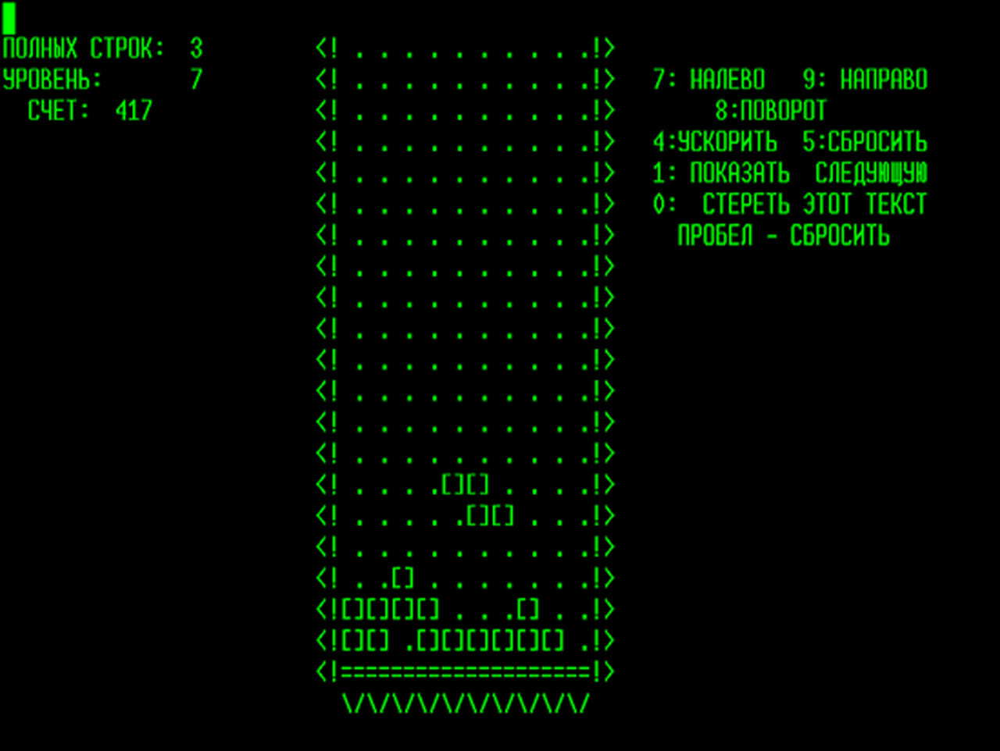
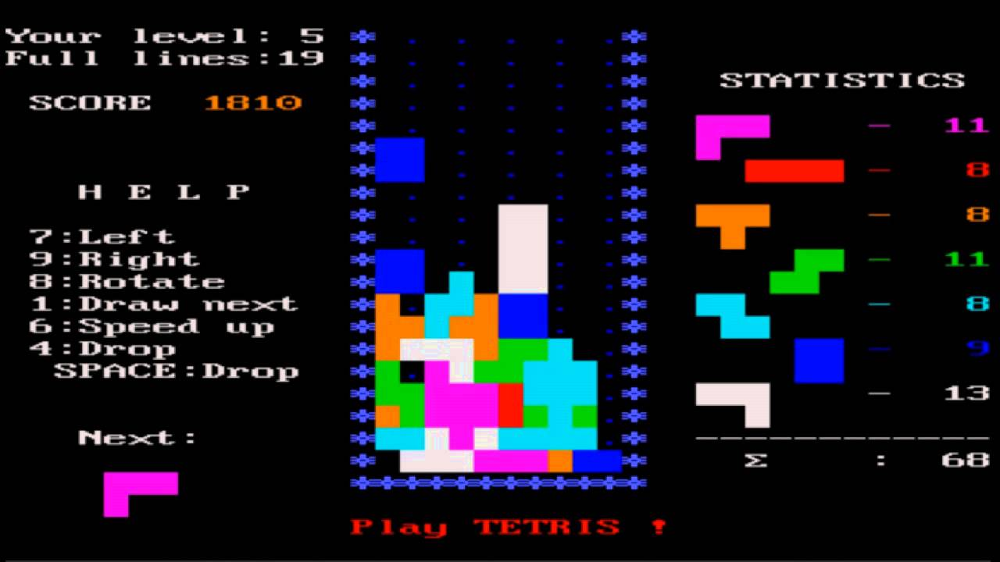
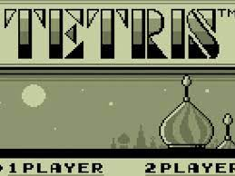

Provenance
Tetris provien de la Russie s'est un chercheur russe Alexey Pajitnov qui pour combiner sa pation de la programation et des puzzle qui a fait le tout premier tetris. Il la fait avec les moyen du bbord sur son ordi.

Vien ensuite Robert Stein. cette personne qui voyait du potentielle dans le jeu à décider de le commercialiser dans le dos de son créateur. Le graphisme s'étant améliorer à donné cela.

Après son succès monumentale. les diver compagnies se sont inspirés d'un poème russe(Korobeiniki) pour leur musique.
Ainsi, tout les facteur réuni on permis de créer le premier tetris à être reconnu
